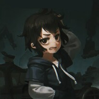

À propos de moi
Bonjour !! Je suis une élève de seconde passionnée par l'informatique et la musique. Je viens d'une famille nombreuse de 8 membres : 5 enfants, 2 parents et mon chien Popper. En se moment, en stage à SUPINFO je crée ce site afin d'apprendre les bases du developpement web...
Mes Projets
Projet 1 : Ce Portfolio
Un site personnel créé en HTML et CSS pour apprendre les bases du développement web.
Projet 2 : Maquette de Jeu
Conception d'une interface pour un jeu vidéo imaginaire sur Figma.
Projet 3 : À venir...
Devenir musicienne évidemment !!